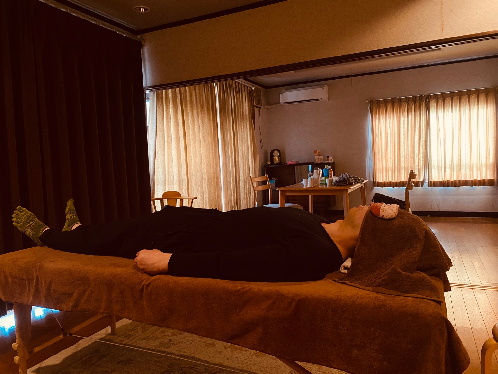
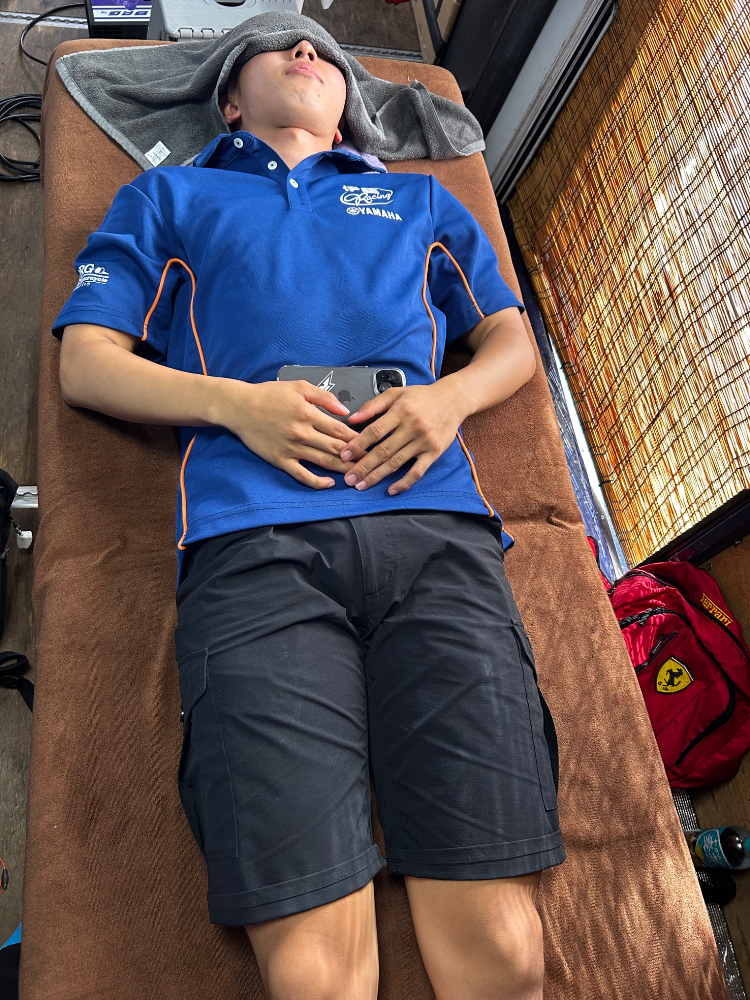
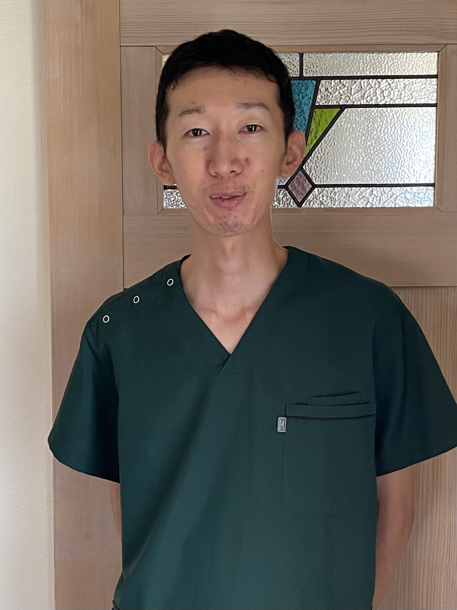
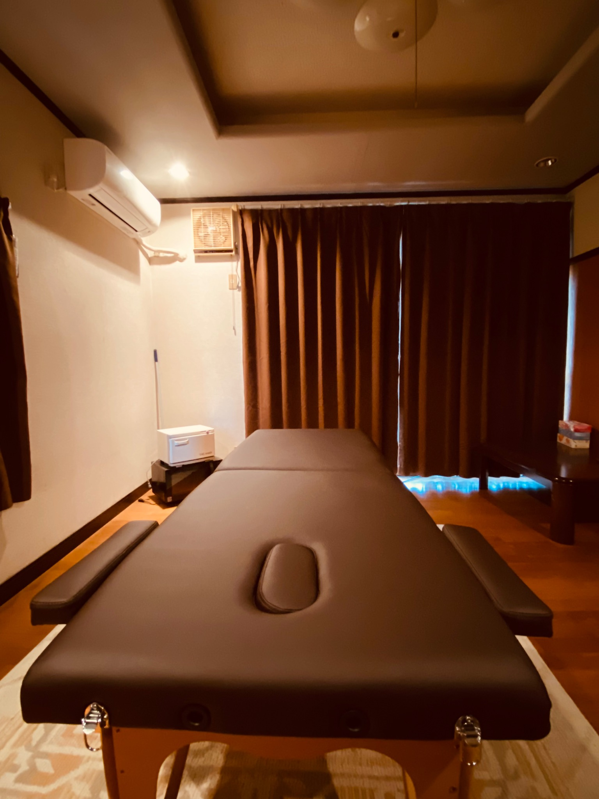

01
痛みを我慢しない
叩く・揉むといった強い刺激ではなく、ずらす・揺らす・流す。身体が身構えない触れ方を大切にしています。
WELCOME
このページをご覧いただき、ありがとうございます。
ABOUT HEALSALON TOKU
リフレッシュ整体
元の身体にある身軽さや軽快さを、実感していただく。
それが、Healsalon tokuの考える整体です。
強く揉んだり、痛みを我慢する施術ではありません。身体が自然と力を抜き、元の身体にある軽さを思い出せるような、そんな時間を届けたいと考えています。

叩く・揉むといった強い刺激ではなく、ずらす・揺らす・流す。身体が身構えない触れ方を大切にしています。
初回は首・肩・腰・脚のセルフケアも一緒に行い、今の感覚と変化をご自身の身体で確かめます。
何かを足すのではなく、もともと備わっている自然な働きが発揮されやすい状態へ整えます。
身体を整えることと、その先の毎日が少し軽くなるきっかけを大切にしています。

PERFORMANCE SUPPORT
レース前後のコンディションづくりとしても、ご利用いただいています。
「頭や目の施術は、走行前に受けると気持ちがすっきりして集中しやすくなります。レース翌日も痛みや筋肉痛はありませんでした。」
玲さん｜バイクレーサー
この施術を通して学んだことを、誰かの役に立てたい。
その想いで、Healsalon tokuを始めました。
施術が終わったあと、少し身体が軽くなって、
「これから何をしようかな。」
と感じる瞬間になれたなら嬉しく思います。

PROFILE
施術が終わったあと、
「これから何をしようかな。」
そんな気持ちが自然と生まれる時間を、届けられたら嬉しく思います。
ACCESS
〒701-4246
岡山県瀬戸内市邑久町山田庄501-4
JR邑久駅より徒歩約15分・車約5分
駐車場2台
平日 18:00〜20:00
土日 10:00〜20:00
どうぞ、お気をつけてお越しください。
